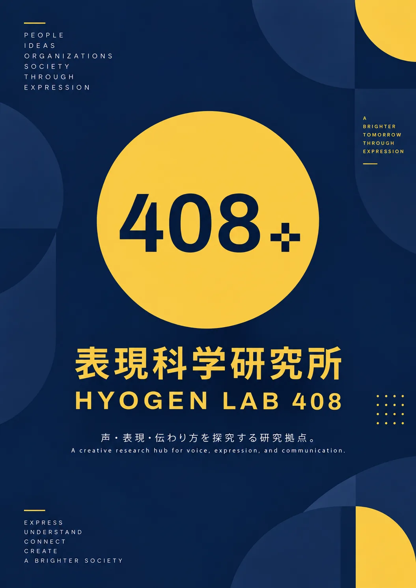

AboutAbout
Turning life into something you can look back on as a work.
Expression is not only for delivering something to others. It is also a way to bring your own experience outside and receive it anew yourself.
People speak. Write. Sing. Perform. And sometimes, they surprise themselves with what they have created.
The Hyogen Science Institute HYOGEN LAB 408 researches how expression is born, how it is received, and what it returns to the person who expressed it.
It is not a place just for researchers. Artists, creators, executives, students and experts — a laboratory where people who want to understand expression more deeply come to think, test and learn.
- Institute
- Hyogen Science Institute HYOGEN LAB 408
- Director
- Tsuyoshi Yamashita
- Base
- Room 408, Building 4, Kitakyushu Science and Research Park (Hibikino) (since October 1, 2026)
- Address
- 808-0135 Room 408, 1-8 Hibikino, Wakamatsu-ku, Kitakyushu, Fukuoka, Japan
- Contact
- TEL 093-287-4979 MAIL info@hyogen-lab.jp
PersonTsuyoshi Yamashita
山下 剛史
Director, Hyogen Science Institute
A planner who accompanies the experiments of your lifeIn his words
For about 30 years, I have worked in places where people express something — voice, music, theater, audio works and education.
It may look as though I have done many different things, but perhaps I have been doing the same thing all along: finding experiences inside people that have no name yet, giving them shape, and returning them to that person or to society.
Today, I research the phenomena I have seen in those fields as expression science at HYOGEN LAB 408.
People I have worked with
- Coaching singer Diana Garnet
- Coaching voice actor Kaori Maeda
- Voice direction for Kenta Matsukuma's solo debut
History30 years of watching people express.
Music, theater, studios, media, education. For about 30 years I have been where people express.
“Why does this person's voice reach people?” “Why does the same message stay with people differently?” “Why does turning your own story into a work change even how you see yourself?”
Those “whys” are what I research now.
Observations and records from years of practice are treated as background for generating research hypotheses. In formal research, we follow procedures and collect data suited to each research purpose.
A place to test voice and expression.
- Voice recording, editing and analysis environment
- Practice with artists and creators
- Developing research prototypes
- Publishing research via Jxiv and DOI
PublicationsPaper
- Jxiv / 2026.09An Integrated Research Framework Connecting Expressers' Operations and Receivers' Reactions (in Japanese) (external page) ↗
- Jxiv / 2026.05An Integrated Model of Preventive Voice Medicine for Occupational Voice Users (in Japanese) (external page) ↗
Both are preprints (not yet peer-reviewed).
BaseBase
Finding questions in the field. Testing them through research. Returning them to the field.
October 1, 2026. HYOGEN LAB 408's research base started at the Kitakyushu Science and Research Park in Hibikino. It doesn't end inside the laboratory. It doesn't end inside the studio. Practice → research → practice: through this back-and-forth, we nurture expression science.
A research base exploring voice, expression and how things are conveyed.Words from the institute's poster
About this gallery
This gallery holds the works of the Hyogen Science Institute HYOGEN LAB 408 and lets you experience them. From music, voice and stories to research and practice in business, they are arranged in seven rooms.
The works are shown as their original files. Only VOICE BLOOM was adjusted for the gallery, with added controls such as stopping input and a demo sound. The work itself is displayed in Japanese.
Among the works that use a microphone, audio leaves your device only when you turn on “Also respond to words” in VOICE BLOOM (it uses the browser's speech recognition). It is off by default.